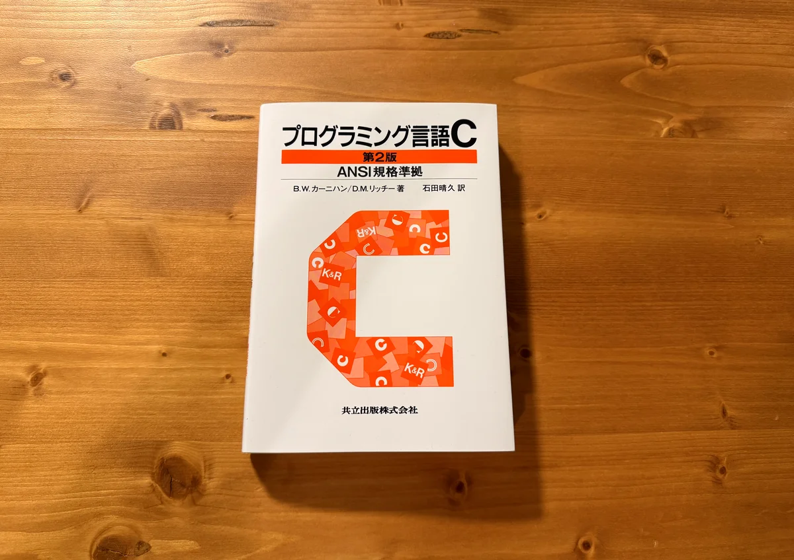

『プログラミング言語C 第2版』を読んだ


Operating Systems: Three Easy Pieces(以下、OSTEP)に取り組むにあたって、C言語の知識があるとスムーズそうだったので読んだ。

Cに関してはCS50で基本的な文法を学んだ程度であまり体系的には学んでいなかったので、CS50の内容を補完するような感じで読んだ。

どんな本か#
C言語の開発者であるB.W.カーニハンとD.M.リッチーによるC言語の解説書。
1989/06/15発売と、約40年前の本だが入門書としての評価が未だに高いようだったので買ってみた。(結果的にも普通に勉強になったので良かった)
二人のイニシャルをとってK&Rと呼ばれることもあるらしい。
ちなみに、
1.1 Getting Started に、例として掲載されている"hello, world"プログラムは、あらゆる「プログラミングの最初の例題」として定番となった。
とあるように、hello, worldの生みの親としても有名らしい。（！）
各章に演習問題が豊富に用意されているので手を動かしながら学びやすかった。
また、付録を除くと231ページと比較的コンパクトなので、Cの全体像をざっと把握するのにちょうどいいボリューム感だった。
読み方#
- 1,2章は演習問題をやりつつ読み、他の章は演習問題をスキップして本文だけ読んだ。
#includeなしでboolが使えると多少楽そうだったのでC23で動かした。- 演習問題を解いた実装はこちら。
学び#
- 変数、関数の可視性の制御方法(
static、extern) #includeの機能("foo.h"と<foo.h>の違いなど)- aが配列のとき
a[i]と*(a + i)は同じ - 共用体
- 結構使うのが難しそうなので相当パフォーマンスを重視したいときにしか使わないかも…?
- 関数ポインタ
- マクロの基礎
- etc.
まとめ#
(すべての演習問題をやったわけではないのもあって)1週間ちょっとでCについて一通り簡単に学べて、ちょうどいいボリューム感だった。
ということでOSTEPに取り組む準備ができたので次は実際に着手していこうと思う。
Read other posts